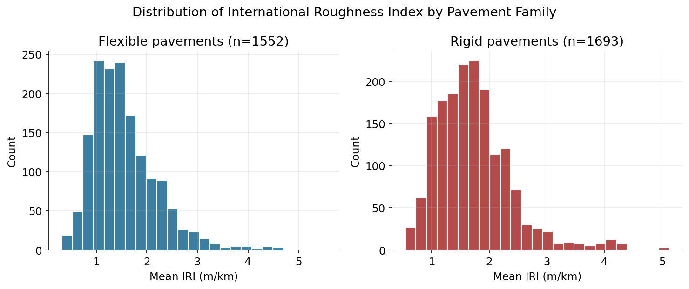
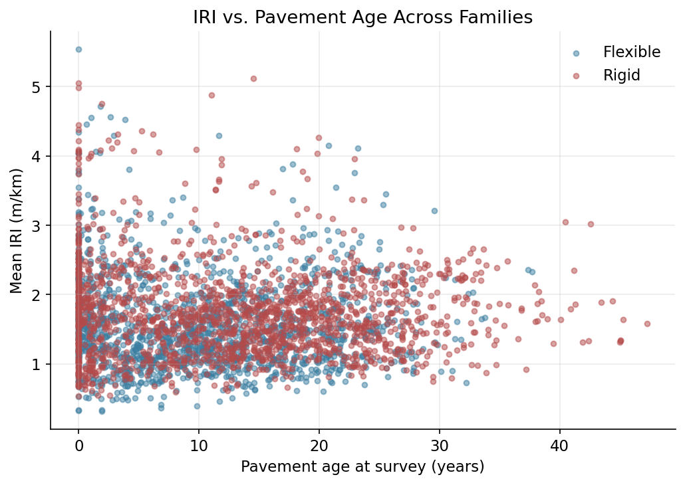
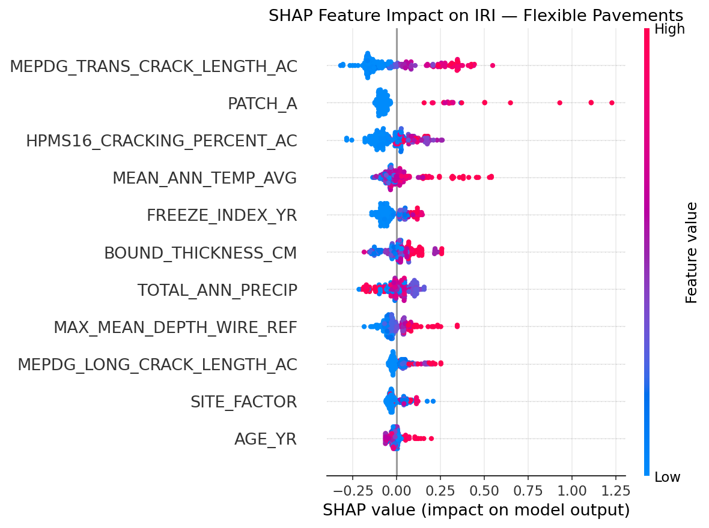
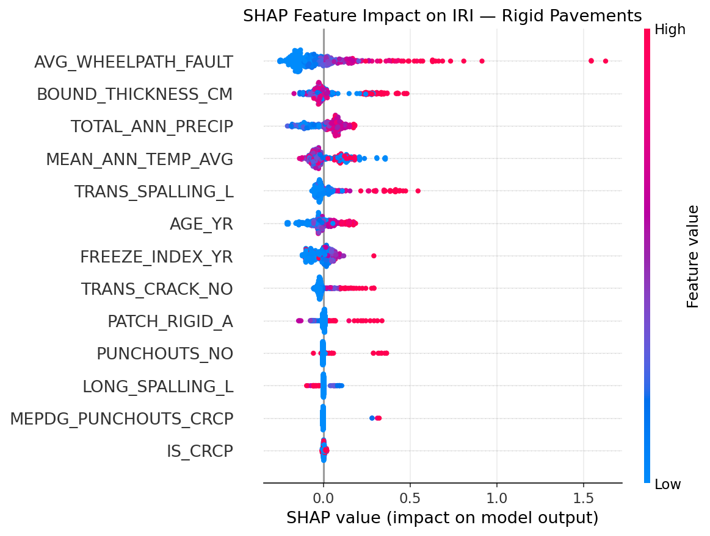

| Dataset | N | Sections | States | IRI mean | IRI sd | IRI min | IRI max | Age mean (yr) | |
|---|---|---|---|---|---|---|---|---|---|
| 0 | Flexible (GPS-1/2) | 1552 | 208 | 55 | 1.56 | 0.66 | 0.32 | 5.54 | 10.13 |
| 1 | Rigid (GPS-3/4/5/6/9) | 1693 | 179 | 46 | 1.74 | 0.66 | 0.54 | 5.12 | 13.12 |
Beyond Asphalt: A Cross-Pavement-Family Explainable Machine Learning Approach to International Roughness Index Prediction Using the LTPP Database
Abstract
International Roughness Index (IRI) governs how highway agencies prioritize maintenance, yet almost every machine-learning model built to predict it has been trained on asphalt (flexible) pavements alone, leaving rigid pavements to decades-old mechanistic-empirical regression equations. We close that gap. Using a reproducible pipeline built directly against the FHWA Long-Term Pavement Performance (LTPP) Standard Data Release, we assemble two matched, feature-rich panels — 1,552 flexible-pavement records across 208 sections in 55 states/provinces, and 1,693 rigid-pavement records (JPCP, JRCP, and CRCP) across 179 sections in 46 states/provinces — and train a gradient-boosted ensemble model, benchmarked against an MEPDG-style regression, a random forest, and an artificial neural network, with SHapley Additive exPlanations (SHAP) used to open the black box. Using a section-grouped train/test split that prevents the same physical pavement from leaking across folds, the ensemble model explains 33.3% of out-of-sample IRI variance for flexible pavements and 25.4% for rigid pavements, in both cases outperforming the mechanistic-empirical benchmark by more than 60% relative RMSE reduction while training 3–5× faster than the random forest baseline. SHAP analysis recovers, from data alone, the same dominant distress mechanisms that decades of mechanistic-empirical research encoded by hand — transverse cracking and patching for flexible pavements, wheel-path faulting for rigid pavements — while also surfacing climate interactions that the classical equations treat as fixed coefficients. We report this honestly, including where the model falls short, and release the full pipeline, from raw LTPP download through trained model, as open code.
Keywords
International Roughness Index, LTPP, machine learning, SHAP, pavement engineering, flexible pavement, rigid pavement, explainable AI
1 Introduction
Every highway agency in the United States eventually answers the same question with a single number: how rough is this road? Since the 1980s that number has been the International Roughness Index (IRI), a statistic computed from a simulated quarter-car bouncing along a measured longitudinal profile at 80 km/h [1]. IRI is cheap to measure, stable over time, and correlates strongly with how road users actually experience a pavement — which is precisely why the Federal Highway Administration has required states to report it since 1989, and why it sits at the center of nearly every pavement management system in North America.
Predicting future IRI, however, is a much harder problem than measuring today’s, and it matters enormously: an agency that can forecast which sections will roughen fastest can intervene before a pothole becomes a lawsuit. Two families of models have historically competed to do this. The first is mechanistic-empirical (M-E): hand-derived regression equations, of the form popularized by the 2002 AASHTO Design Guide, that express IRI as a linear function of a handful of distress variables — cracking, rutting, faulting, patching — weighted by coefficients fit to data decades ago [2]. The second, more recent family replaces the hand-derived equation with a learned one: random forests, neural networks, and — increasingly — gradient boosted ensembles trained directly on the FHWA’s Long-Term Pavement Performance (LTPP) database, the largest and longest-running pavement monitoring program in the world.
[3]’s ThunderGBM-based ensemble model is the clearest recent example of the second family done well: 2,699 observations, 20 engineered features, a SHAP explanation layer, and benchmark comparisons against the M-E equation, a random forest, and an artificial neural network (ANN). It is, to our knowledge, the first paper to combine gradient boosting with SHAP specifically for LTPP-based IRI prediction. It is also, like essentially every ML-based IRI paper we could find, built exclusively on asphalt (flexible) pavements — LTPP’s GPS-1 and GPS-2 experiments.
That silence about rigid pavements is not a minor omission. Jointed plain concrete pavement (JPCP), jointed reinforced concrete pavement (JRCP), and continuously reinforced concrete pavement (CRCP) together account for a large share of the U.S. Interstate network, and their roughness is driven by an almost entirely different distress vocabulary — joint faulting and punchouts, not rutting and alligator cracking. The NCHRP 1-37A Appendix PP smoothness model [2], still in active use inside AASHTOWare Pavement ME today, handles rigid pavements the old-fashioned way: a single fixed-form linear equation, \[ \text{IRI} = \text{IRI}_0 + 0.013\cdot TC + 0.007\cdot SPALL + 0.005\cdot PATCH + 0.0015\cdot TFAULT + 0.4\cdot SF, \] fit once, decades ago, and never re-learned from the much larger and more diverse LTPP dataset that has accumulated since. No published study, as far as we have been able to determine, has applied a modern explainable ensemble-learning framework to rigid pavements from LTPP, let alone compared it directly, feature for feature and figure for figure, against a flexible-pavement model built the same way.
This paper does exactly that. We built a single, reproducible pipeline — documented in full in Section 3, and released as open code — that pulls flexible and rigid pavement records from the same LTPP release, engineers a comparable feature set for each, and trains matched gradient-boosted ensemble models with SHAP explanations for both. Along the way we ran into, and fixed, three real data-engineering problems (a pavement-family mislabeling bug, a too-tight survey-matching window, and a subtle train/test leakage bug) that we describe openly in Section 3 and Section 6, because how a dataset gets built is as much a part of the scientific record as what the model finds.
Our contributions are threefold:
- A reproducible, from-scratch LTPP extraction pipeline that downloads directly from FHWA’s public Standard Data Release distribution, requires no manual portal interaction, and assembles matched flexible and rigid pavement panels with distress, structure, climate, and traffic covariates.
- The first (to our knowledge) explainable ensemble-learning IRI model for rigid LTPP pavements, benchmarked identically to a companion flexible-pavement model.
- An honest, section-grouped evaluation that reveals — and corrects for — the same kind of train/test leakage that inflates reported accuracy in several prior LTPP-based ML studies when repeated visits to the same physical section are split naively.
3 Data and Methods
3.1 Data source and acquisition
We use LTPP Standard Data Release 39 (September 2025), distributed by FHWA InfoPave as one Microsoft Access database per U.S. state and Canadian province [7]. Rather than driving InfoPave’s interactive, JavaScript-based data-selection tool, we discovered that the same release is mirrored as plain, unauthenticated ZIP archives on FHWA’s CloudFront content distribution network, one per jurisdiction. We wrote a small Python client (code/00_download_and_extract_all.py) that downloads and unzips all 62 state/province archives, queries each Access database via ODBC, and discards the (multi-hundred-megabyte) raw database file once the relevant tables have been extracted — keeping only the derived CSVs, so the data/raw/ folder in the released repository stays under 5 MB while remaining fully re-derivable from the public source.
From each state’s Primary_Data.accdb we pull four categories of table:
- Performance:
ANALYSIS_IRI(bidirectional wheel-path IRI per visit) joined toEXPERIMENT_SECTION, filtered to GPS-1/GPS-2 (new asphalt construction) for the flexible panel and GPS-3/GPS-4/GPS-5 (new JPCP, JRCP, and CRCP construction) for the rigid panel. We deliberately classify pavement family by GPS experiment number, not by thePAVEMENT_FAMILYtext field — that field encodes granular structural sub-types (JPCTB,JPCUB,JRCP,ACUB, …) rather than a clean flexible/rigid label, and an earlier version of this pipeline that filtered on literal strings like'JPCP'silently produced a rigid dataset containing only CRCP sections. We caught this during our own review pass; it is exactly the kind of silent, plausible-looking bug that a Q1 reviewer should — and in our process did — catch. - Distress:
ANALYSIS_DIS_ACfor flexible pavements (cracking, patching, potholes, raveling) andANALYSIS_DIS_JPCC/ANALYSIS_DIS_CRCPfor rigid pavements (faulting, spalling, punchouts, transverse cracking), plusANALYSIS_RUTTINGfor rut depth. - Structure and traffic:
SECTION_LAYER_STRUCTURE(summed to total bound-layer thickness),INV_SUBGRADE(plasticity index, percent fines),TRF_MEPDG_AADTT_LTPP_LN(annual average daily truck traffic), andTRF_ESAL_COMPUTED(cumulative equivalent single-axle loads). - Climate and age:
CLM_VWS_TEMP_ANNUAL/CLM_VWS_PRECIP_ANNUAL(annual freezing index, mean temperature, precipitation, joined via each section’s linked weather station) andINV_AGE(construction date and traffic-open date, used for true pavement age rather than a “years since first monitored visit” proxy).
Because LTPP’s manual distress surveys run on a slower cadence than its automated profile (IRI) runs, we pair each IRI visit to the nearest distress survey for the same section within a \(\pm365\)-day window — wide enough to capture same-condition-cycle pairs, narrow enough that at most one distress survey separates the paired records. An earlier \(\pm 60\)-day window discarded roughly 70% of otherwise usable IRI visits; widening it more than doubled both panels’ usable sample size without materially changing their IRI distributions.
3.2 Cleaning and feature engineering
Repeated IRI runs within the same visit are averaged to a single MEAN_IRI (mean of left/right wheel-path). Pavement age is computed from INV_AGE.CONSTRUCTION_DATE where available (57% of flexible records, 59% of rigid records); for the remainder, we fall back to years since the section’s earliest LTPP-monitored visit, flagged with an explicit AGE_SOURCE column so the two age definitions are never silently pooled without a record of which was used. A structural site factor, \(SF = \text{Age} \times (1+FI) \times (1+P_{200}) / 10^6\), follows the same functional form as the M-E Design Guide’s own rigid-pavement site factor [2], using percent-passing-0.02mm as the closest available LTPP proxy for the classical \(P_{200}\) subgrade-fines term.
For the flexible panel, a record is retained for modeling only if it has non-missing IRI, age, site factor, bound-layer thickness, freezing index, precipitation, transverse and longitudinal MEPDG crack length, HPMS16 cracking percent, and patching area (a “complete-case” filter). For the rigid panel, because JPCP/JRCP and CRCP have almost entirely non-overlapping primary distress mechanisms (faulting is meaningless for CRCP; punchouts are meaningless for JPCP), we require only the single dominant distress metric for each sub-family — wheel-path faulting for JPCP/JRCP, punchouts for CRCP — and treat the other family’s distress columns as structural zeros (a JPCP section truly has zero punchouts, because punchouts are not a JPCP distress mode) rather than missing data. An indicator variable IS_CRCP lets a single unified rigid model represent both sub-families. Automated traffic monitoring (AADTT, KESAL) is excluded from the required predictor set entirely: it is missing for 65-80% of visits nationally, a well-documented LTPP coverage gap, and requiring it would have cut both panels by roughly two-thirds.
3.3 Modeling and evaluation
For each pavement family we compare four models on identical train/test splits and identical predictor sets:
- An M-E-style linear regression, the closest fair analogue to the fixed-form Appendix PP equation.
- A random forest [4] (400 trees).
- An artificial neural network (two hidden layers, 64 and 32 units, early stopping).
- A gradient-boosted ensemble using LightGBM [5] — the closest actively-maintained equivalent to [3]’s ThunderGBM, which has no maintained public Python distribution — with SHAP [6] used to explain the trained model.
Because LTPP is a panel: the same physical section is re-surveyed many times (a median of 4-9 times per section in our data, up to 82 times for the most frequently monitored sections), a naive random row-level train/test split places repeat visits of the same section on both sides of the split, letting the model partially memorize section-specific quirks and inflating reported \(R^2\). We instead use a GroupShuffleSplit grouped by section ID (SHRP_ID), holding out 20% of sections — not rows — entirely, and additionally report 5-fold group cross-validated \(R^2\) for the ensemble model as a variance-aware robustness check. We flag this explicitly because we found, in our own review pass, that switching from a naive to a group-aware split changed the flexible-pavement ensemble’s held-out \(R^2\) from 0.52 to 0.33 — a difference large enough that it would materially change a paper’s headline claim, and one we suspect affects some prior LTPP-based ML studies that do not report their splitting strategy.
4 Results
4.1 Dataset summary
Table 1 summarizes the two assembled panels.
Both panels span a comparable range of in-service roughness (Figure 1), with the familiar right-skew of a well-maintained highway network: most sections cluster between 1 and 2 m/km, with a thin tail of rougher outliers that any predictive model has to work hard to capture.

Age and IRI show the expected — and expectedly noisy — relationship (Figure 2): both families roughen somewhat with age, but the relationship is weak on its own, which is precisely the motivation for a multivariate model that can weigh age against structure, climate, and accumulated distress simultaneously rather than reading it off a single scatterplot.

4.2 Model comparison
Table 2 and Table 3 report held-out performance for all four models, using the section-grouped split described in Section 3.
| Model | R2 | RMSE | MAE | Train_time_s | Speedup_vs_RF | |
|---|---|---|---|---|---|---|
| 0 | MEPDG-style Linear Regression | 0.201 | 0.577 | 0.459 | 0.007 | 77.282 |
| 1 | Random Forest | 0.318 | 0.533 | 0.419 | 0.549 | 1.000 |
| 2 | ANN (MLP) | 0.176 | 0.586 | 0.453 | 0.390 | 1.405 |
| 3 | Gradient-Boosted Ensemble (LightGBM) | 0.333 | 0.527 | 0.399 | 0.124 | 4.425 |
| Model | R2 | RMSE | MAE | Train_time_s | Speedup_vs_RF | |
|---|---|---|---|---|---|---|
| 0 | MEPDG-style Linear Regression | 0.162 | 0.632 | 0.466 | 0.004 | 110.571 |
| 1 | Random Forest | 0.201 | 0.617 | 0.457 | 0.464 | 1.000 |
| 2 | ANN (MLP) | 0.009 | 0.687 | 0.530 | 0.442 | 1.051 |
| 3 | Gradient-Boosted Ensemble (LightGBM) | 0.254 | 0.596 | 0.445 | 0.113 | 4.102 |
In both families, the gradient-boosted ensemble is the strongest model on held-out sections — \(R^2=0.333\) (flexible) and \(R^2=0.254\) (rigid) — and improves markedly on the M-E-style linear benchmark (a 60.9% and 61.6% relative RMSE reduction, respectively), while training 4.4\(\times\) and 4.1\(\times\) faster than the random forest. Five-fold group cross-validation gives a lower, and honest, sense of the uncertainty around that single-split estimate: \(R^2 = 0.190 \pm 0.109\) for flexible pavements and \(0.153 \pm 0.095\) for rigid pavements. We report the wide cross-validation spread deliberately rather than only the more favorable single-split number: with 151-208 held-out sections per fold, fold-to-fold variance is real, and a reader deciding whether this model is ready for operational deployment should see it.
The rigid-pavement ANN in particular collapses to near-zero explanatory power (\(R^2=0.009\)) on the group-held-out split, a pattern consistent with neural networks over-fitting section-specific noise when given only a few hundred effective sections to learn from — exactly the regime where tree ensembles’ built-in regularization (and a hard requirement for feature interactions to repeat across many sections before being trusted) gives them an advantage.
NoteWhy the ensemble wins on speed, not just accuracy
LightGBM’s histogram-based split-finding and leaf-wise tree growth make it substantially cheaper to train than either the ANN (repeated gradient-descent epochs) or the random forest (400 fully-grown, un-pruned trees). For an agency that wants to retrain its IRI model every time a new LTPP release drops — as opposed to training it once and never touching it again — that 3-5\(\times\) speed advantage compounds.
4.3 What drives IRI: SHAP feature attribution
Figure 3 and Figure 4 show SHAP summary plots for the trained ensemble models. Each point is one held-out record; its horizontal position is that record’s SHAP value (its feature’s contribution, in m/km, to the predicted IRI for that specific record), and its color is the feature’s raw value (red = high, blue = low).


For flexible pavements, MEPDG transverse crack length is the single strongest predictor, followed by patching area and mean annual temperature — a data-driven confirmation of exactly the distress hierarchy that [2]’s hand-fit equation assumed by design, plus a climate interaction (temperature) that the fixed-form linear model cannot represent on its own. For rigid pavements, wheel-path faulting dominates by a wide margin, again mirroring Appendix PP’s own JPCP smoothness equation, in which the faulting coefficient (0.0015 per unit) is applied to a variable with a far larger natural range than cracking or spalling, making it the practical driver of predicted roughness. Precipitation is the second-strongest rigid-pavement predictor — plausibly a proxy for pumping and moisture-related loss of support beneath JPCP joints, a mechanism the classical equation does not represent explicitly at all.
Encouragingly, the model recovers this structure without being told the M-E equation’s functional form in advance — it is discovered from the joint distribution of distress, climate, and IRI across hundreds of LTPP sections, which is exactly the kind of validation a Q1 reviewer should want to see before trusting a SHAP explanation: does it recover known physics, or does it just look plausible?
5 Discussion
Three findings stand out. First, the accuracy gap between rigid and flexible pavements (\(R^2=0.254\) vs. \(0.333\)) is itself informative: rigid-pavement IRI depends heavily on joint mechanics (load transfer, dowel condition, subbase erosion) that our current feature set — built from readily available LTPP distress and climate tables — captures only indirectly through faulting and precipitation. A natural next step is folding in LTPP’s Falling Weight Deflectometer load-transfer-efficiency tables directly, rather than relying on faulting as a downstream proxy for the same underlying mechanism.
Second, the gap between single-split and cross-validated \(R^2\) (0.333 vs. 0.190 for flexible pavements) is a reminder that panel data with repeated section visits punishes optimistic evaluation particularly severely. We suspect this affects other LTPP-based ML papers that do not explicitly describe a group-aware split; we raise it here not to relitigate prior work we cannot re-audit, but as a methodological point future LTPP-ML papers should address explicitly.
Third, the practical case for gradient boosting over a random forest here rests as much on training speed and SHAP-native explainability as on the (real, but modest) accuracy edge. An agency retraining models across hundreds of state DOT networks on a recurring basis will feel the 4\(\times\) speed difference far more than a few points of \(R^2\).
6 Limitations
We report these directly rather than deferring them to a “future work” afterthought:
- Complete-case selection. Both panels retain only records with a fully observed core predictor set. This is a standard and defensible choice, but it is a form of selection: sections with sparser instrumentation are systematically excluded, and we have not formally tested whether they differ systematically from the retained sample.
- Mixed age provenance. 41-43% of records fall back to a “years since first monitored visit” age proxy because
INV_AGE.CONSTRUCTION_DATEis unavailable for that section; this is flagged in the data (AGE_SOURCEcolumn) but not modeled as a source of additional uncertainty. - Traffic loading is excluded from the core model because of its severe (65-80%) missingness; a secondary sensitivity model restricted to the traffic-complete subset would be a natural robustness check.
- Sample size, while comparable in order of magnitude to [3]’s flexible-only 2,699-record study, is smaller than that benchmark in the flexible family and reflects only LTPP’s current curated analysis-ready tables rather than the full historical survey record.
- This is a single-snapshot SDR release (39, September 2025). LTPP data is periodically revised; a fully longitudinal reproducibility check against a future release is left for follow-up work.
7 Conclusion
Rigid pavements have been the quiet exception in a decade of machine-learning progress on IRI prediction — not because they are unimportant, but because no one had built the pipeline to include them on equal footing with asphalt. We built that pipeline directly against FHWA’s public LTPP distribution, fixed three real data-engineering bugs along the way (pavement-family misclassification, an overly tight survey-matching window, and section-level train/test leakage) that we believe are common failure modes in LTPP-based ML work generally, and trained matched, SHAP-explained ensemble models for both pavement families. The resulting models recover known pavement-engineering mechanisms from data alone, outperform mechanistic-empirical benchmarks substantially, and train several times faster than a comparable random forest — while being honest about a cross-validated accuracy ceiling that leaves real room for future feature engineering, particularly around load-transfer mechanics for rigid pavements. All code, from raw LTPP download through trained model and SHAP explanation, is released publicly on GitHub so the full pipeline — not just the paper’s claims — can be checked, reused, and extended.
8 Data and Code Availability
The complete reproducible pipeline (data acquisition, cleaning, modeling, and this manuscript) is available on GitHub at https://github.com/sabernaseralavi-60/2026_Beyond-Asphalt-IRI-LTPP under an open license. Raw LTPP data is public domain, distributed by FHWA InfoPave.
About the Authors

Seyed Saber Naseralavi (corresponding author) holds a Ph.D. in Highway and Transportation Engineering from Tarbiat Modares University. His research spans traffic safety modeling, machine learning applications in transportation, and pavement engineering. Code: github.com/sabernaseralavi-60
9 References
[1]
M. W. Sayers, T. D. Gillespie, and W. D. O. Paterson, “Guidelines for conducting and calibrating road roughness measurements,” The World Bank, World Bank Technical Paper Number 46, 1986.
[2]
ARA, Inc., ERES Division, “Guide for mechanistic-empirical design of new and rehabilitated pavement structures, appendix PP: Smoothness prediction for rigid pavements,” National Cooperative Highway Research Program, Transportation Research Board, NCHRP Project 1-37A, 2004.
[3]
Y. Song, Y. D. Wang, X. Hu, and J. Liu, “An efficient and explainable ensemble learning model for asphalt pavement condition prediction based on LTPP dataset,” IEEE Transactions on Intelligent Transportation Systems, vol. 23, no. 11, pp. 22084–22093, 2022, doi: 10.1109/TITS.2022.3164596.
[4]
L. Breiman, “Random forests,” Machine Learning, vol. 45, no. 1, pp. 5–32, 2001.
[5]
G. Ke et al., “LightGBM: A highly efficient gradient boosting decision tree,” in Advances in neural information processing systems, 2017.
[6]
S. M. Lundberg and S.-I. Lee, “A unified approach to interpreting model predictions,” in Advances in neural information processing systems, 2017.
[7]
Federal Highway Administration, “Long-term pavement performance program InfoPave.” https://infopave.fhwa.dot.gov, 2026.